Mockups
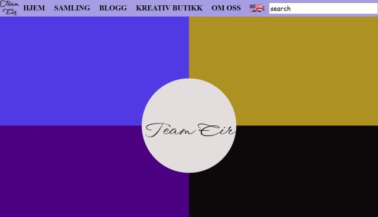
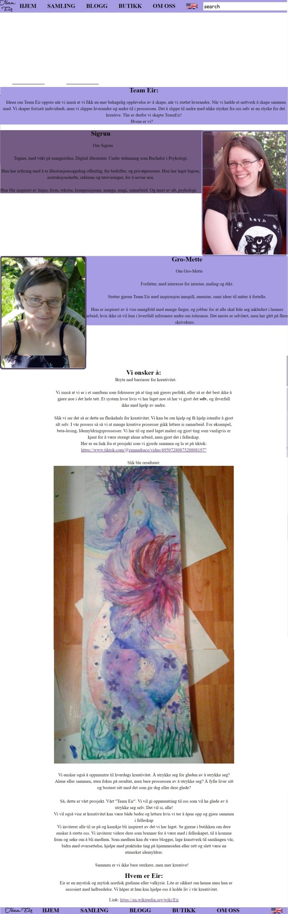
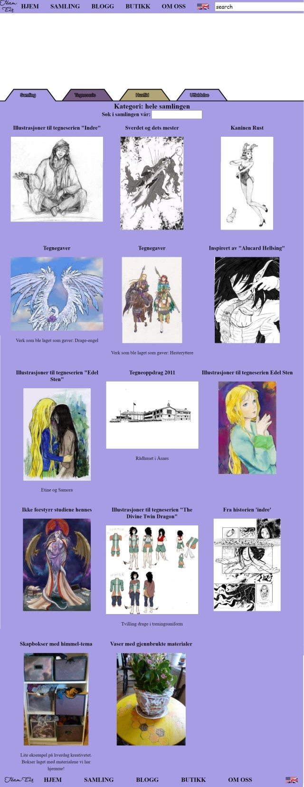
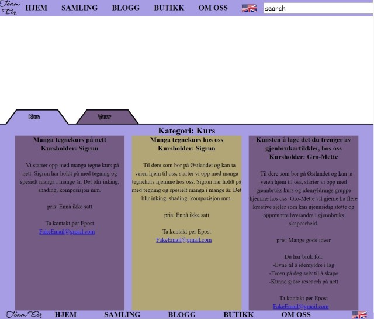
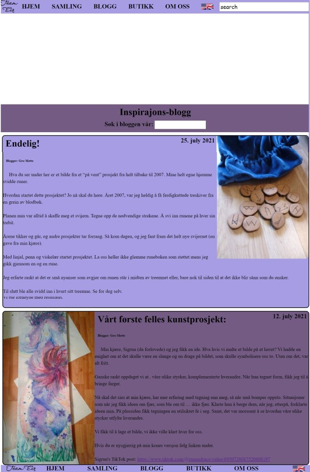
Mockups
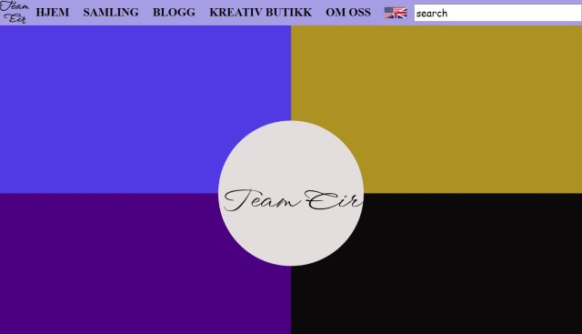
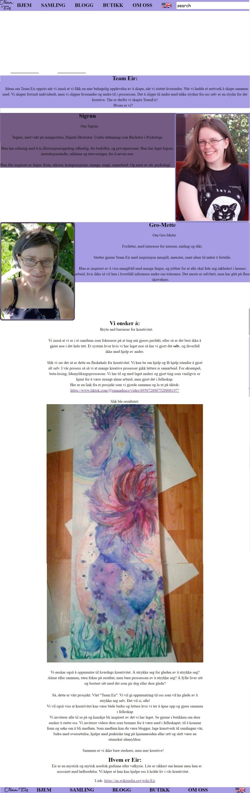
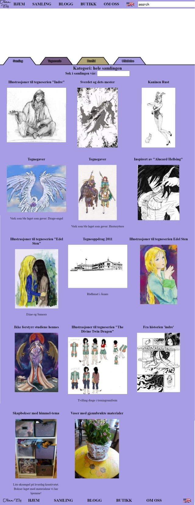
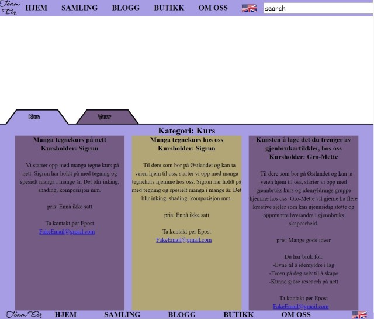
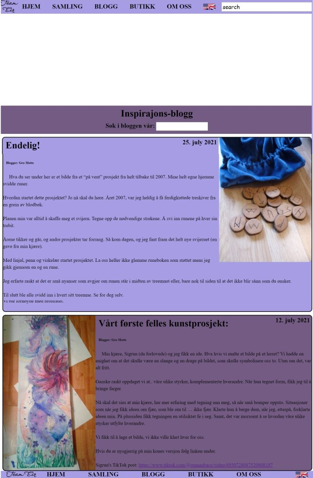
This is the scelteton to be the webpage of Team Eir. A page requested by an artistic and entuseastic lesbian couple.
They are purple people and love color. I wanted that to be incorporated without becoming garish.
I took a light purple and a ligth blue and added a complete contrasing yellow(To really pop).
Their page has several functions.
They wanted a page that can be a place to show up their art.
A page that could be home for an ispiration blog.
To tell about what they want the page for:
To share the message of creativity and creativity through cooperation.
That gave us four pages: A home page,a collection page, a blog page, an about us page
Were took long time to decide on the last page. After several suggestions, "a creativity page",
"brainstorming page". In the end we decided on a site that could bring in some income for the upkeep
of the website.
This site is a sceleton, off course. With the actual page we will need an actual database online.
The real site will need to have backend for making the page and add a language pack instead of
double html :D :D :D I am hopful that as I get further in this study and study a bit on the
side that I am able to deliver the kind of page they want.
The main thing thing that inspired me was the girls and the images I was sent.
They wanted purple and blue. They wanted an arena for their images. They wanted a
blog to be able to tell about recent development.
My second influence is my own patronage of websites in genereal and when I compare my
product to that I cannot say I feel to well! Still the project is still unfinished.
And, the actual website that will go online will be a lot smoother than this.
My third inspiration was the work in the cooperative midterms. That was my first ever website.
With this my second. So it was very influential. I wish I would have carried more of the
elements from that website over to this site, but time contrains have been hard.
I had a pure CSS slideshow, i had extensive and careful mediaQueries for screen width.
I have a languege button for changing language Norwegian - English
The setting you choose for language is also saved to localstorage so that your choice
is saved.
The website is relativly useable for people with sight impairment. The main text is in a clear
and readable font (ariel)
I have alts for pictures, also for the pictures that are preceduraly generated with handlebars!
I have a high contrast format where the colors of the page are relativly weak and I use maximum
black for text. The p5 elements are not tabable and are indeed not viewable for sight imparied
users, so I do regret making the tabs with p5.
I tried my best to keep the website compatible with as many users as possible.
I was on my way to making the site work without javascript. All menu changes, like language shift.
changing . Now in this case I have a lot of frontend javascript that would not be natural to
actually be used on the frontend. Like the loading of the collections and blogs.
That templating would be done on the backend on an actual website, I assume.
If any I know I will have issues with older internet explorers, because of things Like
float and flex, but if any method or syntax had any warnings on them for
any significant amount of users, I would not use them.
I tried to make the site intuitive. That cursors change appropriately. I had to fight
my friends a little. They wanted tabs that changed the html. So you would be playing
around with the tabs and suddenly load a new html. I put my fot down on this as that would
have made the page a lot less intuitive and placed links on the top. (I could also have pleased them but then the
main page would have to have ALL the content, not a good choice when you have alot of images
to display.)
Sorting of elements into groups. For the samling I created groups you can change with
the tab. This makes getting an overview of the content a lot easier.
Made the display of the blog a template. This means that if someone wants to make another
post they do not have to know any web development, but simply fill in a template.
I would have Made a place to fill in form to make new posts,
but that is just one of many ideas that I did not have time to implement.
State 3 things you had to learn/find out by yourself when creating your site, and describe
how you did that (i.e. what searches you did, any new tools/techniques you learned, any
changes/adaptations you made to a particular resource to make it work with your site).
I was a very eager googler during this task. I googled HTML, CSS and javaScript solutions.
I especially got to understand the CSS selectors during making this website. Though
float is still a mystery to me!
I googled handlebars and p5 for syntax and to learn to use them better
I found a thousand little tips and tricks.
I learned that googeling, learning and implementing is a slow(but rewarding) process!
I was happy with the templating with handlebars. I understand that this
is meant to work in the backend. But for this basicly design work, not having
to rewrite a bunch of elements when you made achange one part of element was golden.
Being able to just add to the database to make new elements was also really nice.
Language switcher. The girls wanted a Norwegian page, and I did not
have any idea how to make a multilingual page when I started. I ended up with
double html for every part that needed to be translated. The only way I saw to get
away from the dobule element language solution, I think would be templating. That would
mean that most of the page (every element that needed a language change) would
be a template. As hard as it was working with the template. Harder to write, harder
to test and much harder to read(Visual studie cannot read it so it is just brown)
I am happy with my solution. It would be hell just for one more language, but for
the two I was happy to be able to implement it.
I wanted to make so much more! More of everything. A replacement of the p5 tabs
so that seeing impaired could tab to an element corresponding to the choices.
Templated modal opening of all the elments in pictures, with extended text in mobile and
with a comment field to leave feedback on the images. Similar modal content for blogs.
Media queries to properly take care of mobile, and make the header work better on small
widths.
Image carusels for every element that had several images attached.
A nice illustrations and image gallery in the p5 field.
All of it I would have been able to do, or have even done before,
but I just ran out of time.
I think, less ambition and more time for the most important features.
I will also never again take on two projects over summer holiday!
https://handlebarsjs.com/
I used handlebars for templating content
https://p5js.org/
I used p5 for custom tabs for choosing content, And
decorating top bar.
Visual studio code for coding
Github for version control and exchanging work between computers.
https://fonts.google.com/specimen/WindSong?preview.size=19&preview.text=TeamEir&preview.text_type=custom#glyphs
font for logo
https://stackoverflow.com/questions/90178/make-a-div-fill-the-height-of-the-remaining-screen-space
flex to make element cover screen
https://stackoverflow.com/questions/43129360/css-grid-wrapping
grid control
https://ux.stackexchange.com/questions/53911/what-is-the-smallest-screen-size-you-design-for
310 px
https://commons.wikimedia.org/wiki/File:English_language.svg
english language flag
https://nl.m.wikipedia.org/wiki/Bestand:Flag_of_Norway.svg
norwegian flag
Pure css image carousel adapted from https://css-tricks.com/css-only-carousel/
https://stackoverflow.com/questions/12893205/how-to-set-the-height-of-an-input-text-field-in-css
From user Dipak, setting height of input field:
input[type="text"]{ padding: 20px 10px; line-height: 28px; }
https://www.w3schools.com/howto/howto_css_modals.asp
Modal content for individual
css:
https://dev.to/adrianbdesigns/you-can-create-these-elements-without-javascript-525a
Wireframes
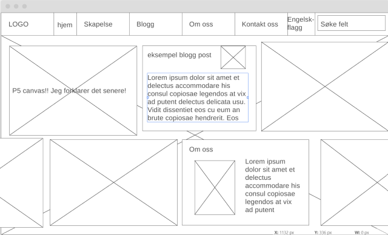
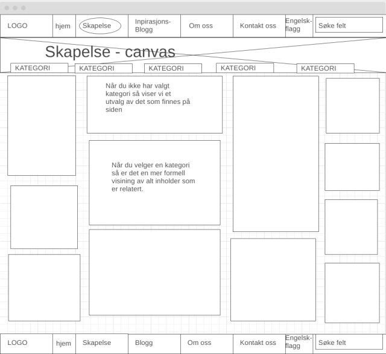
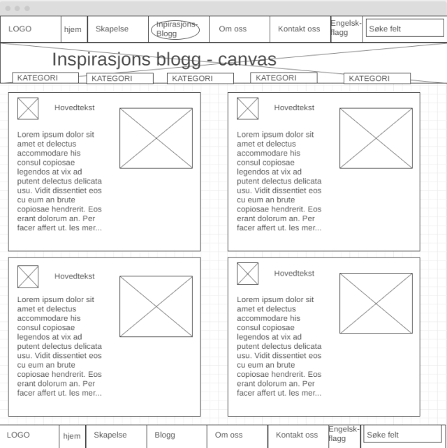
Mockups
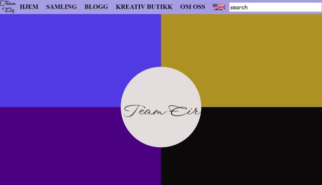
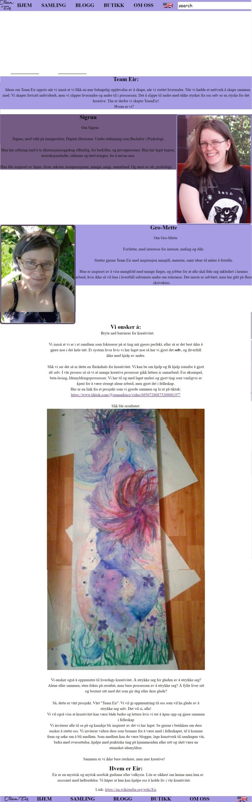
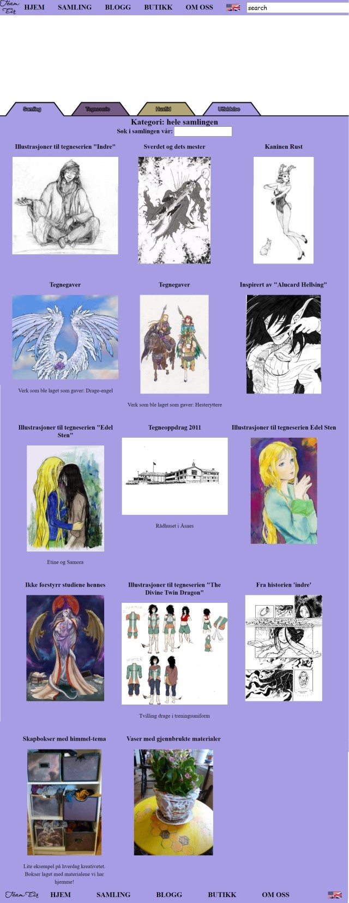
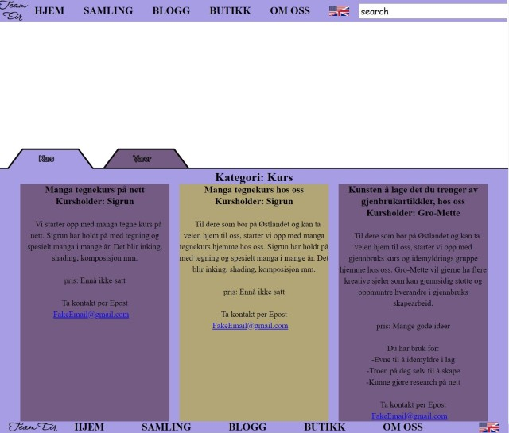
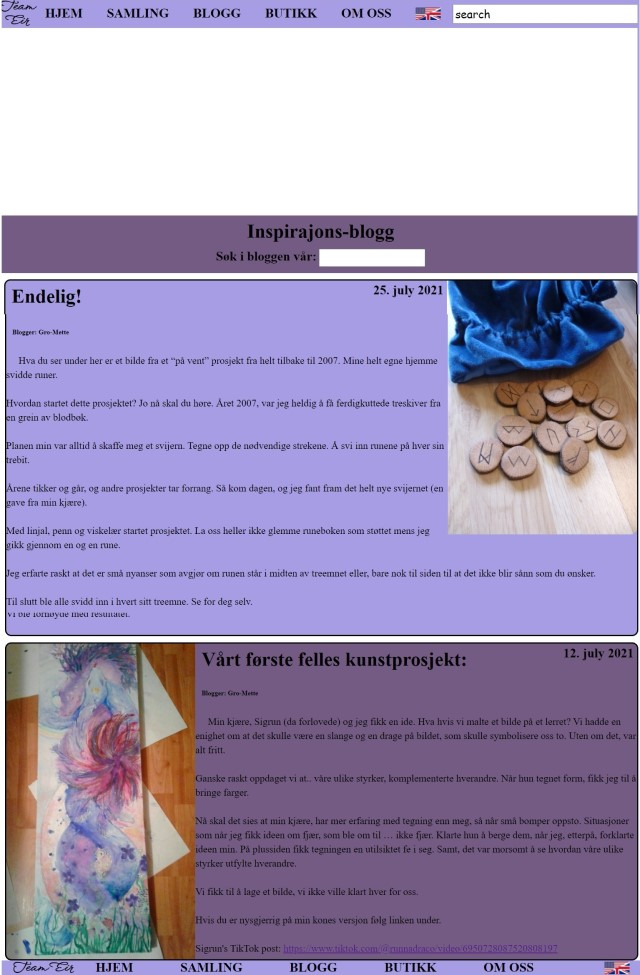